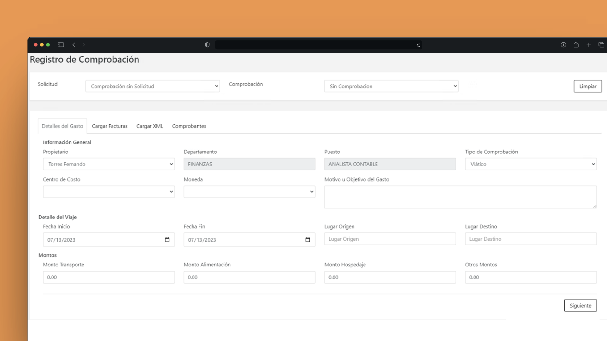
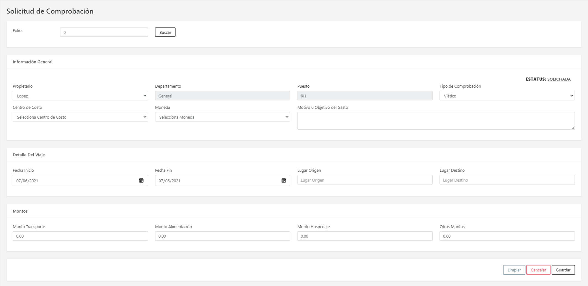
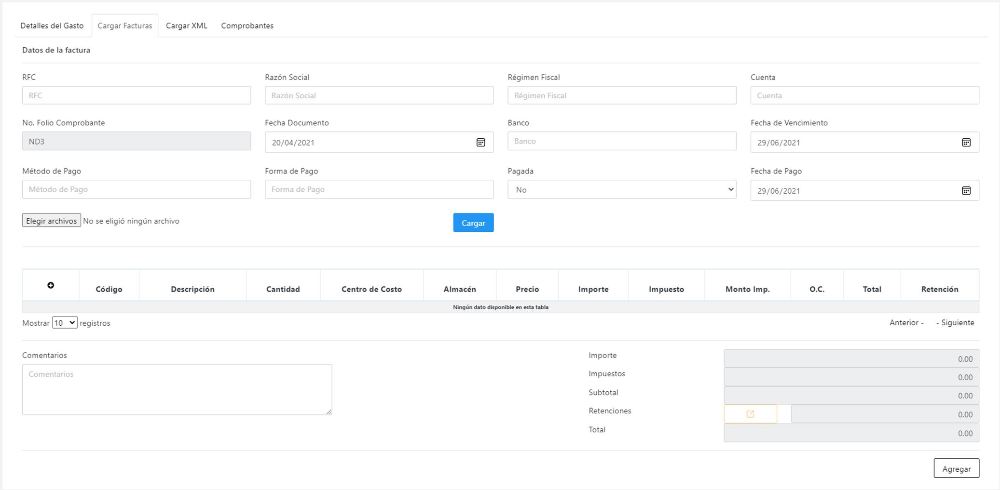

Portal de Viáticos
Plataforma web para digitalizar solicitudes, comprobaciones y autorizaciones de viáticos, conectando la operación del usuario final con procesos financieros en SAP Business One.
Información disponible: este caso resume la solución y muestra capturas seleccionadas; el repositorio no es público.


MVC + C# para operación web empresarial
Integración con DI API para procesos financieros
Empleado, autorizador y administrador
Validaciones fiscales al cargar XML
El Portal de Viáticos resolvió una operación interna que dependía de procesos manuales, documentos dispersos y acceso directo al ERP. La solución entregó un flujo controlado para registrar gastos, validar comprobantes, autorizar solicitudes y sincronizar operaciones con SAP Business One.
Contexto y solución
La compañía necesitaba reducir fricción operativa, mejorar el control del gasto y evitar que usuarios finales dependieran de licencias o acceso directo a SAP para actividades administrativas. Se implementó un portal web desacoplado que centraliza solicitudes, comprobaciones y aprobaciones, manteniendo la consistencia contable mediante integración con SAP Business One.
Capacidades principales
Solicitud y comprobación
Registro de viáticos, carga de XML, PDF e imágenes para sustentar cada gasto.
Flujo por roles
Separación de responsabilidades para empleados, autorizadores y administración.
Integración financiera
Sincronización con SAP B1 para facturas, pagos, reembolsos y reintegros.
Trazabilidad operativa
Historial completo de solicitudes, estatus, documentos y validaciones del ciclo de gasto.
Arquitectura e integración
La solución se construyó como una aplicación ASP.NET MVC con C# y SQL Server, desplegada en IIS e integrada con SAP Business One mediante DI API para registrar operaciones financieras sin exponer la complejidad del ERP al usuario final.
Vistas, formularios, validaciones de entrada, carga documental y experiencia operativa con JavaScript / jQuery.
Reglas para autorización, comprobación, validación fiscal y estados del ciclo de viáticos.
Conexión con SAP B1 DI API para documentos, pagos, reembolsos y reintegros contables.
Persistencia en SQL Server, administración de evidencias y despliegue productivo en entorno Windows.
Control operativo y trazabilidad
Gobierno del gasto sin fricción para el usuario final
El portal concentró validaciones fiscales, evidencias documentales, permisos por rol y seguimiento de estatus, permitiendo a la operación trabajar fuera de SAP sin perder control financiero ni visibilidad administrativa.
Mi rol
Diseñé y desarrollé la solución full stack para la gestión de viáticos.
Implementé la integración con SAP Business One para sincronizar operaciones financieras.
Desarrollé reglas de autorización, comprobación, validación documental y estados del flujo.
Participé en configuración, despliegue y estabilización productiva sobre IIS.
Una operación de viáticos más controlada, trazable y menos dependiente del ERP.
La solución redujo procesos manuales, mejoró la visibilidad del ciclo de gasto y permitió que usuarios finales gestionaran solicitudes y comprobaciones sin acceso directo a SAP Business One.
-
Periodo:
2020
-
Tipo:
Aplicación web empresarial
-
Empresa:
IT Consultant
-
Rol:
Full Stack .NET Developer
-
Integración:
SAP Business One DI API
-
Disponibilidad:
Proyecto interno / No público
Capturas del producto
Flujo de solicitud y comprobación de viáticos con evidencias documentales y seguimiento operativo.


Creación de solicitud con datos de viaje, importes y documentación inicial.


Comprobación de gastos con evidencias, documentos fiscales y seguimiento de estatus.